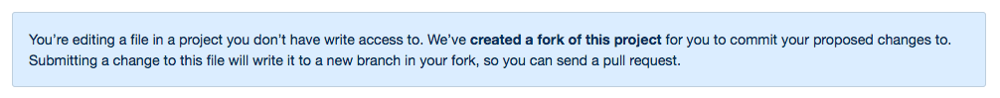

GitHub for Writers
How to use GitHub as a documentation tool, using only your web browser
What is Github?
Github is a version control system for code, documentation, and issue tracking. Like Bitbucket and GitLab, GitHub is based on the command-line tool, git.
- Github homepage: github.com
- My homepage: github.com/apaskulin
- Create a free GitHub account
Repositories and branches
A repository is a group of files in GitHub. Create your first repository.
Branches are versions of the repository, “master” is the official version.
Use the T key to see all files or search for a file.

Manage Content
GitHub stores content as markdown files that end .md.
See the markdown version of this page and the displayed version.
Add files
To add a file to a repository, select “Create new file” and add a filename
that uses-dashes-between-words and ends in .md.
Add folders
You can’t add an empty folder, but you can:
- Create a file in a new folder by typing “new-folder-name/” before the filename.
- Move a file to a new folder by editing the file, selecting the filename,
and using the
backspacekey (deleteon mac) to edit the folder name.
Add images and PDFs
For version-controlled images, select “Upload files” to add images, PDFs, or other files to the repository. Without version control, drag and drop an image into any comment box on GitHub and paste the link into a markdown file. GoogleDocs must be linked from a markdown file.
Workflows
When editing markdown files in your repository, you can choose to make changes with or without requesting a review.
Make changes without requesting a review
- Navigate to the file you want to change, and select the pencil icon on the right side of the page to edit. Select “Preview Changes” to see how your page will look.
- When you’re ready to save, scroll to the bottom of the page and add a short description of your changes under “Commit changes”. (For me, often “Fix typo”.)
- Hit the green “Commit changes” button to save your changes.
Make changes and request a review
- Navigate to the file you want to change, and select the pencil icon on the right side of the page to edit. Select “Preview changes” to see how your page will look.
- When you’re ready to save, scroll to the bottom of the page and add a short description of your changes under “Commit changes”.
- Check the option for “Create a new branch for this commit…” and select “Propose file change”.
- Complete the pull request with a description of the changes you made, and select “Create pull request”.
- If you want to make additional changes, navigate to the file you want to change. Select the branch box and yourname-patch-1 to switch to your working copy, then commit your changes.
Publish changes
Share your pull request with reviewers. They can see your changes and leave comments by selecting “Files changed”. You can continue to make changes to your pull request as long as you’re on the correct branch. GitHub adds add new changes to your pull request automatically.
When you’re ready to publish, select “Merge pull request” to save your changes to the master branch. Now you can delete the branch that you just merged; those changes are now in master.
Contribute to open source
You can contribute to the documentation for an open-source project using the workflow to make changes and request a review.
When making changes to a read-only repository, GitHub creates a fork, or copy, of the original repository automatically. You’ll see this warning:

Continue to follow the steps to make changes and request a review. The project maintainers will respond and, hopefully, merge your pull request.
Learn Git
If you’re interested in learning to use git in the terminal, check out this cheat sheet and the git cola tool.
{kind=link}